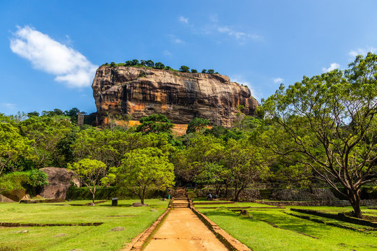
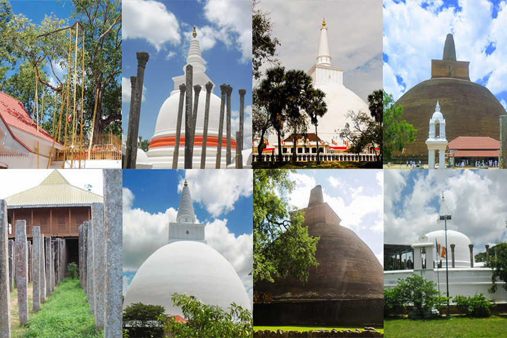

Ayubowan
WELCOME TO SRI LANKA

Sri Lanka's Rich Heritage
Journey through time and immerse yourself in the fascinating cultural treasures that Sri Lanka has to offer.

Experience Living History
Step into a world of ancient temples, royal palaces, and vibrant traditions that have shaped Sri Lanka's captivating heritage
UNESCO World Heritage Sites
UNESCO World Heritage Sites hold immense cultural and natural significance, representing the outstanding universal value of humanity's heritage. These sites are carefully selected and recognized for their exceptional importance and are protected to preserve them for future generations. Sri Lanka, with its rich historical and cultural tapestry, boasts a collection of remarkable UNESCO World Heritage Sites. These sites bear witness to the island's vibrant past, architectural marvels, and spiritual heritage. As you delve into the world of Sri Lankan UNESCO World Heritage Sites, you will uncover the stories, traditions, and extraordinary beauty that define these exceptional places.
.jpg)

Explore the wonders of Sri Lanka's UNESCO World Heritage Sites, each with its unique tale to tell. From ancient cities to sacred religious sites, these treasures reflect the island's cultural diversity and its historical legacy. Let's embark on a journey through these extraordinary sites:
Sigiriya
Sigiriya is an ancient rock fortress located in the Matale District. It was built by King Kashyapa in the 5th century AD and served as a royal palace. The site features the remains of a palace complex, including gardens, pools, and frescoes. The most iconic feature is the Lion's Rock, a massive rock column with a lion's head entrance. Climbing to the top rewards visitors with stunning views of the surrounding plains and the remnants of the palace
Kandy
.jpg)
Kandy is a cultural and religious center nestled amidst hills in the central part of Sri Lanka. The city is home to the Temple of the Tooth Relic, also known as Sri Dalada Maligawa. It houses a sacred tooth relic of the Buddha, making it one of the holiest sites for Buddhists worldwide. The temple is known for its ornate architecture, religious rituals, and the annual Esala Perahera, a grand procession celebrating the tooth relic.
Galle Fort
.jpg)
Situated in the city of Galle on the southwestern coast, Galle Fort is a well-preserved fortified colonial town. It was initially built by the Portuguese in the 16th century and later expanded by the Dutch during the 17th century. The fort showcases a fusion of European and Asian architectural styles and features charming streets, colonial-era buildings, churches, and museums. The fortifications offer splendid views of the ocean and have withstood the test of time.
Anuradhapura
Anuradhapura was the ancient capital of Sri Lanka from the 4th century BC until the 11th century AD. The city is renowned for its vast complex of archaeological remains that illustrate the grandeur of the ancient Sinhalese civilization. Highlights include the Ruwanwelisaya stupa, which is one of the largest stupas in Sri Lanka, the Jetavanaramaya stupa, and the sacred Sri Maha Bodhi Tree, which is believed to have grown from a cutting of the original Bodhi Tree in India
Polonnaruwa
Polonnaruwa was the second capital of ancient Sri Lanka and flourished between the 11th and 13th centuries AD. The archaeological sites of Polonnaruwa showcase the achievements of the Chola dynasty and the architectural brilliance of the era. Visitors can explore the Royal Palace complex, the Quadrangle with its temples and statues, and the Gal Vihara, a rock temple featuring four colossal Buddha statues carved into a single granite rock.